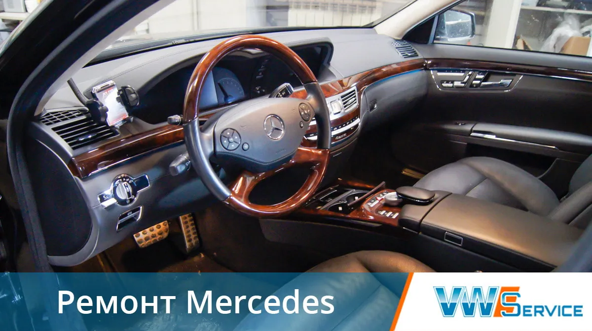
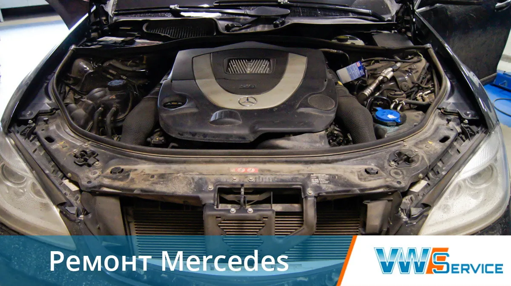
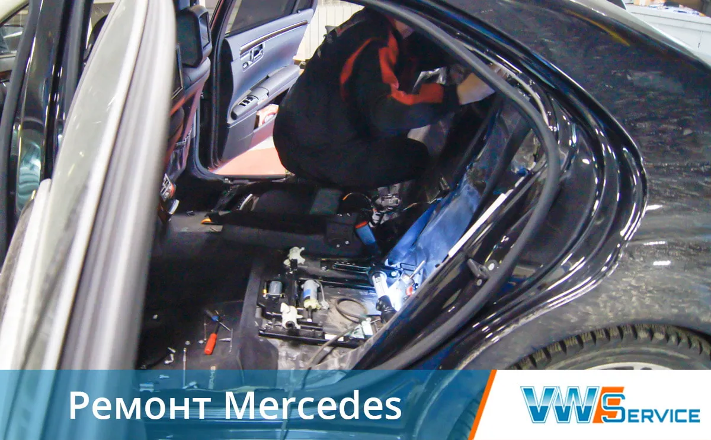
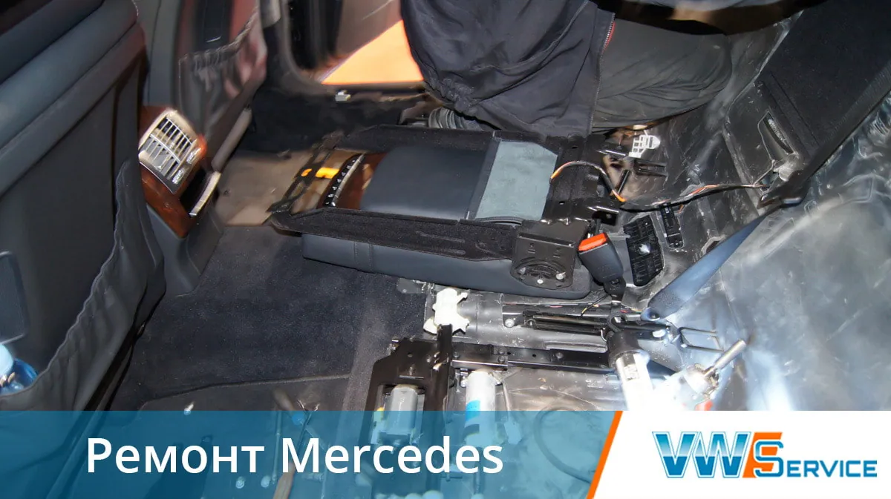
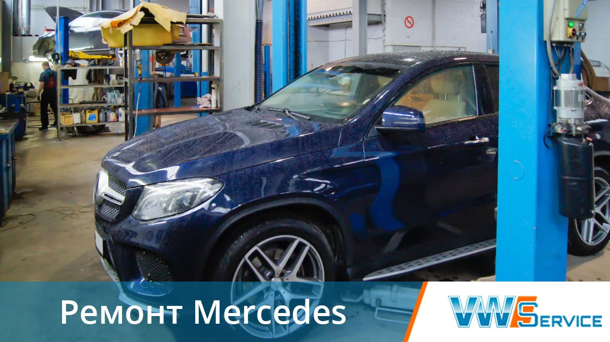
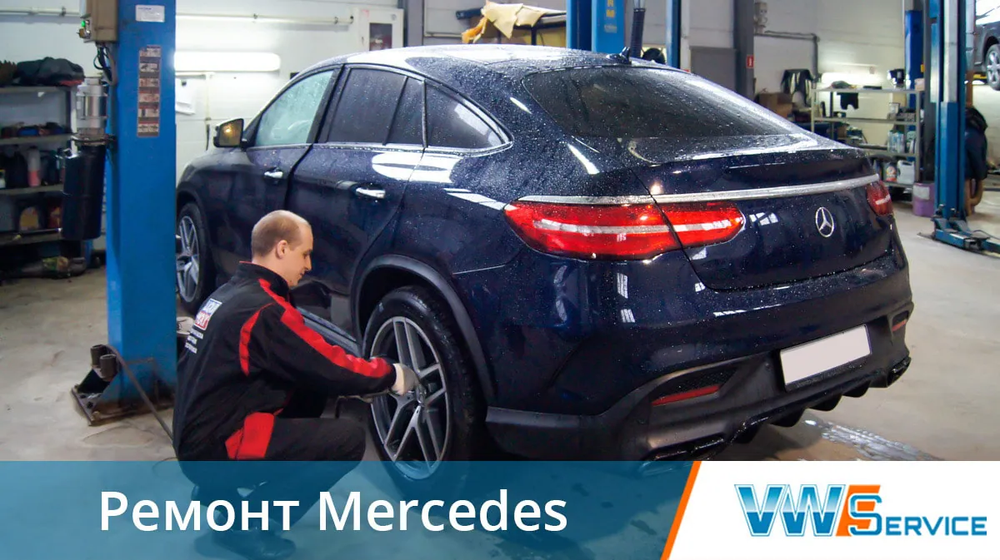
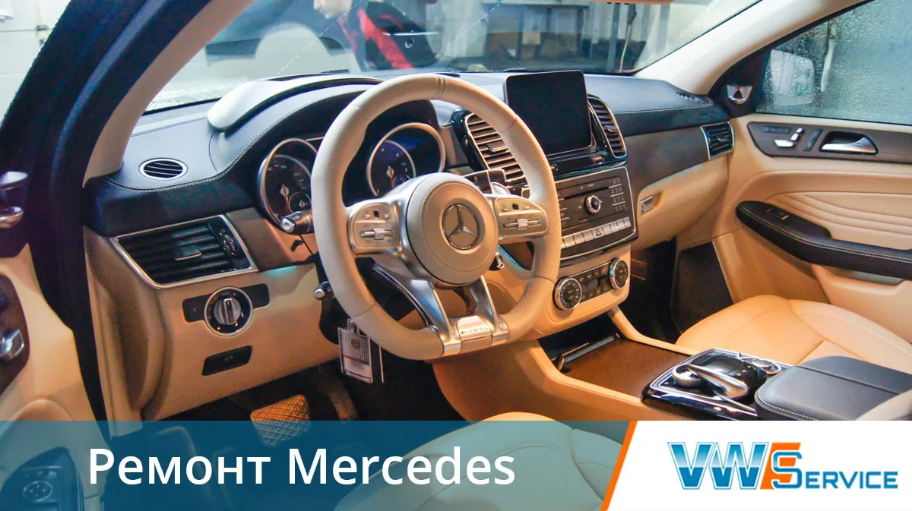
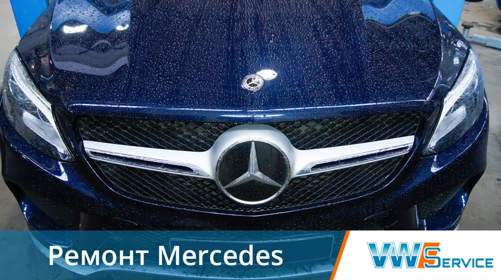
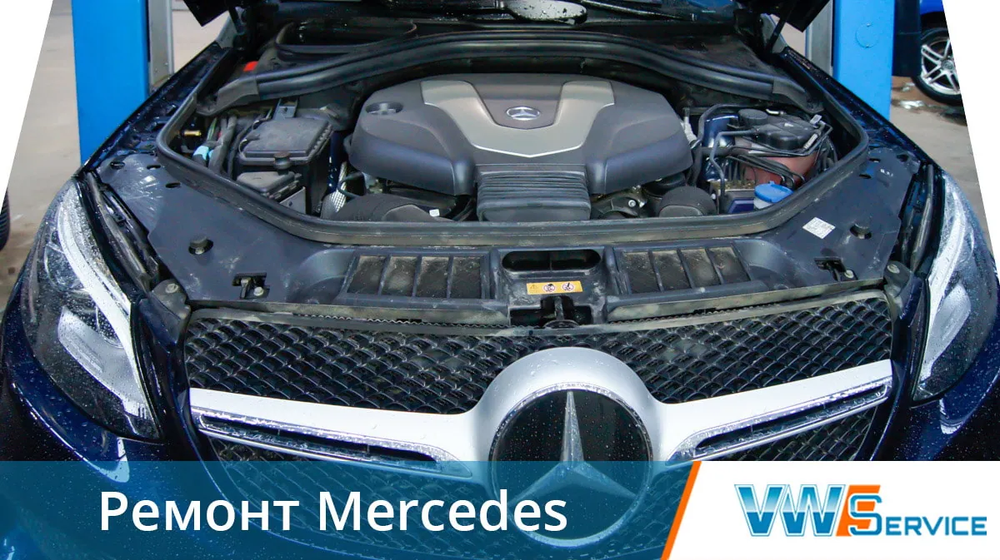
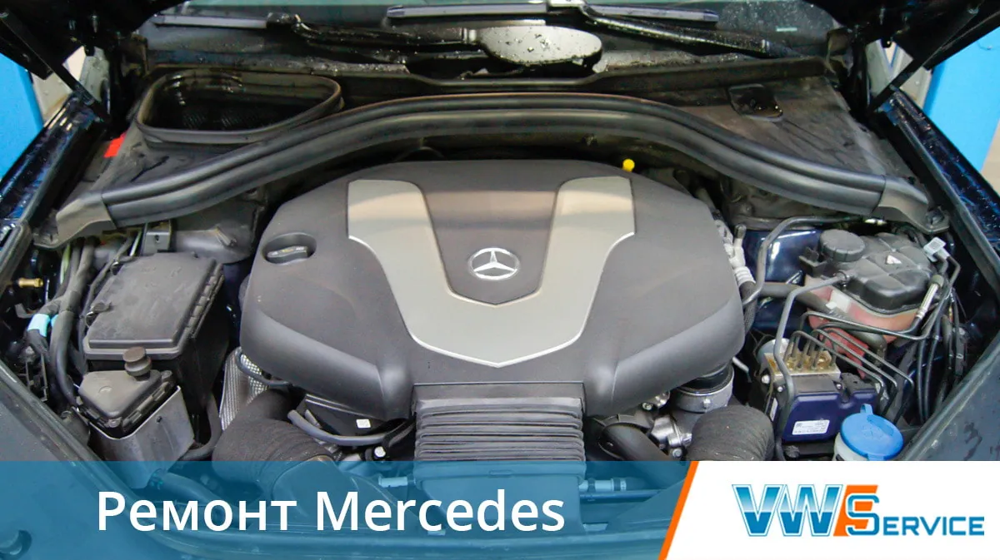

Автоцентр VWS проводит техническое обслуживание и ремонт автомобилей Mercedes.
Мерседес Бенц – всегда считался воплощением надёжности. Но времена миллионных пробегов остались в прошлом, и эта марка для беспроблемной эксплуатации нуждается в специализированном сервисе.
Наш сервисный центр предлагает диагностику и ремонт автомобилей Мерседес Benz всех моделей и годов выпуска. Для вас профессиональный подход и гарантия на все работы, услуги и детали. В автосервисе есть свой склад автозапчастей и расходных материалов, для быстрого обслуживания автомобилей.
Цены на ремонт Мерседес Бенц
| Наименование услуги | Цена, руб. |
|---|---|
| Замена опор подвески двигателя | По запросу |
| Замена переднего сальника коленчатого вала | По запросу |
| Замена приводного ремня двигателя | По запросу |
| Замена прокладки головки блока цилиндров | По запросу |
| Замена прокладки крышки клапанного механизма | По запросу |
| Замена прокладок впускного коллектора | По запросу |
| Замена прокладок выпускного коллектора | По запросу |
| Замена термостата | По запросу |
| Замена ремня ГРМ | По запросу |
| Замена цепи ГРМ | По запросу |
* Стоимость работ указана без учета стоимости расходных материалов. Если не нашли необходимой услуги, обратитесь к нам, и мы подскажем стоимость ремонта автомобиля Mercedes. Цены варьируются в зависимости от комплектации и марки, точную стоимость можно узнать по телефону +7 (495) 632-01-20, либо в разделе " Вопрос-Ответ".
Ремонтируем Mercedes в автосервисе










Техцентр VWS предоставляет
Ремонт Мерседес Бенц в Москве Мастера с многолетним стажем,
Быстро и качественно делают ремонт,
проводят техническое обслуживание
Записаться на услугу
Отзывы клиентов
Ремонтировал в автосервисе свой автомобиль Мерседес МЛ 320, плохо работала электропроводка, специалист быстро нашел и устранил причину. Работой остался доволен, машина теперь без проблем
Вартан
Модель авто: Mercedes Benz
05.03.2021
Цены за работу называют сразу, не разводят, после работы цена не увеличивается. работают быстро, аккуратно. На все работы печатается наряд-заказ, чек. Пока идет ремонт, можно посидеть на диване и посмотреть телевизор, летом - есть кондиционер.
Олег
Модель авто: Мерседес
21.09.2017
Контакты
- г. Москва, 1-й Дорожный проезд, д. 5АЮАО Москвы. Ближайшее метро — «Южная»
- Ежедневно с 8:30 до 20:30Без выходных. Приём автомобилей — круглосуточно
- +7 (495) 260-06-02Эвакуатор: +7 (495) 796-29-99